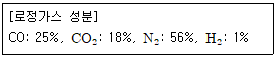
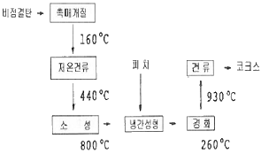

제선기능장 (2016-04-02 기출문제)
1과목: 임의 구분
1. 산소부화송풍의 효과에 대한 설명으로 틀린 것은?
- 노내의 가스속도가 증가한다.
- 단위 시간당 출선량은 증가한다.
- 보시(bosh)가스의 농도가 크게 된다.
- 풍구 앞 연소대의 온도를 상승시킨다.
(정답률: 71%)

2. 소결광 품질이 고로조업에 미치는 영향으로 틀린 것은?
- FeO 는 소결공정에서 Coke 배합비를 많이 할수록 높아진다.
- 피환원성이 좋을수록 환원분화가 일어나지 않아 분발생이 어렵고 입경이 커진다.
- 낙하강도 저하시 분발생이 증가되어 로내 통기성을 저해한다.
- 염기도의 변동폭이 클 경우 열손실을 초래하며 탈류능력이 저하된다.
(정답률: 71%)
3. 열전도율이 뛰어나고 고온에서 열팽창이 거의 없어 코크스로의 탄화실, 연소실 등에 주로 사용되는 산성 내화 연와물은?
- 규석질 내화물
- 크로마그질 내화물
- 돌로마이트질 내화물
- 마그네시아질 내화물
(정답률: 76%)
4. 고로 노체의 지지 형식을 기술한 것 중 틀린 것은?
- 자립식은 대형 고로에 많이 적용된다.
- 자립식은 노정 하중을 철탑으로 지지한다.
- 철골 철피식은 소형 고로 건설을 위해 개발되었다.
- 철피식은 보수 시 철피 교환이 어렵고 대형 고로에서는 채택이 어려운 방식이다.
(정답률: 73%)
5. 야드(Yard) 설비 중 불출설비에 해당되는 것은?
- Stacker
- Reclaimer
- Unloader
- Belt Conveyor
(정답률: 92%)
6. 고로 로체 상부에서 슬립 또는 걸림이 일어나는 원인으로 틀린 것은?
- 장입물의 분포가 불량할 때
- 접착성 광석이 과다 장입하였을 때
- 분광 및 분코크스를 과다 장입하였을 때
- 환원붕귀성의 낮은 광석을 투입하였을 때
(정답률: 75%)
7. 고로에서 고압조업의 효과로 틀린 것은?
- 노황이 안정된다.
- 연료비가 저하된다.
- 송풍량의 증가가 가능하여 생산량이 증가한다.
- 노정압력이 증가함에 따라 코크스비는 증가한다.
(정답률: 86%)
8. 코크스로의 대형화에 따라 탄화실의 온도 분포를 균일화하기 위한 방법으로 틀린 것은?
- 횡버너 사용
- 연소폐가스 순환
- 다단식 버너 사용
- 탄화실의 크기와 벽두께의 변경
(정답률: 74%)
9. 고로조업 중 샤프트부의 노벽에 부착물이 생기는 현상을 방지하는 방법으로 옳은 것은?
- Na, K, Zn 함량이 많은 장입물을 장입한다.
- 광석/코크스를 줄이면서 고온조업을 실시한다.
- 열균열이나 환원ㆍ붕괴하기 쉬운 광석의 장입을 확대한다.
- 통기분포가 불균일한 조업을 통해 노벽 부착물의 낙하를 유도한다.
(정답률: 74%)
10. 석탄 건류가 끝나고 코크스화 최종 진행 과정에서 화락 시간이 있다. 이 화락 시간에 영향을 주는 인자로 틀린 것은?
- 장입 석탄량
- 폐 가스의 발생량
- 장입 석탄의 전수분
- 공급 연료의 발열량
(정답률: 81%)
11. 주물용선의 Si를 많이 함유하고, Mn을 적게 함유하도록 한다. 이 때 배합상 고려사항으로 틀린 것은?
- 일정량의 코크스량에 대하여 광석 장입량을 적게 한다.
- 장입물의 로내강하 시간을 늦추어 조업도를 약간 낮춘다.
- 광재의 염기도를 약간 낮게 한다. 즉, 산성으로 하여 Mn의 환원을 촉진시킨다.
- 고온조업이므로 선철 중에 들어가는 금속원소의 환원율을 높게 생각하여 광석배합을 한다.
(정답률: 61%)
12. 다음 중 소결광의 조직이 아닌 것은?
- 헤마타이트
- 마그네타이트
- 보크사이트
- 칼슘실리케이트
(정답률: 76%)
13. 고로용 코크스는 능률적인 고로조업을 할 수 있도록 품질이 안정되어야 하는데 이를 만족하기 위한 제약조건으로 볼 수 없는 것은?
- 건류온도, 건류속도, 석탄입도 등의 코크스로 조업상의 제약
- 코크스 강도, 회분, 황분의 유지 및 변동방지를 위한 고로 조업상의 제약
- 열풍생산과 원활한 풍압, 풍속을 얻기 위한 열풍로 조업상의 제약
- 강점탄의 적절한 배합에 따른 양질의 코크스 생산을 위한 원료석탄 수급상의 제약
(정답률: 76%)
14. 분광의 괴성법에 해당되지 않는 것은?
- 분광석을 가압기로써 가압성형 시키는 방법
- 분광석에 분코우크스, 분석회석을 혼합하여 가열해서 부분 용융으로 결합시키는 방법
- 소결이 곤란한 미분을 수분화 약간의 점결제를 넣어 구상화시켜 이를 소성하여 경화시키는 방법
- 분광석을 웨지(wedge)로를 사용하여 불순물의 일부를 제거시키고 성분을 균일화하는 방법
(정답률: 79%)
15. 다음 중 연화용융하는 석탄의 조직성분은?
- Vitrinite
- Mineral
- Inertinite
- Fusinite
(정답률: 74%)
16. 고로의 slag-metal 간의 탈황능을 향상하기 위한 것으로 옳은 것은?
- 슬래그의 염기도를 낮춘다.
- 용철 중의 Si, C를 감소시킨다.
- 슬래그 중 산소이온의 활량을 작게 한다.
- 교반 및 욕온상승으로 활량비를 크게 한다.
(정답률: 63%)
17. 제철용 철광석이 갖추어야 할 조건으로 틀린 것은?
- 철 함유량이 많을 것
- 피산화성이 좋을 것
- 해로운 불순물을 적게 함유할 것
- 로내에서 하중, 마모에 견디는 강도가 클 것
(정답률: 80%)
18. 고로조업을 원활히 하기 위한 기술적 방안으로 틀린 것은?
- 장입물의 정립
- 노내 가스분포 조정
- 장입물의 분포 조정
- 직접환원(고체 C에 의한 환원)조장
(정답률: 88%)
19. 고로용으로 사용되는 코크스 중 황(S)의 함유량(%)은?
- 0.8 이하
- 1.5 이하
- 2.0 이하
- 4.0 이하
(정답률: 85%)
20. 석탄을 코크스로에 장입하기 전에 예열하는 이유가 아닌 것은?
- 생산성을 증대시키기 위하여
- 코크스화성을 높이기 위하여
- 탄화시간을 대폭 감소하기 위하여
- 산소함량이 높은 석탄을 사용하기 위하여
(정답률: 61%)
2과목: 임의 구분
21. 축류 송풍기에 대한 설명으로 옳은 것은?
- 주로 중형 이하의 고로에 사용한다.
- 축 위에 여러 개의 회전 날개를 붙인 것이다.
- 풍압 변동에 대한 정풍량 운전이 용이하지 않다.
- 고속 회전에 적합하고, 가볍고 작게 제작이 가능하다.
(정답률: 73%)
22. 다음 중 가스 청정설비가 아닌 것은?
- 스크린
- 제진기
- 전기 집진장치
- 벤추리 스크러버
(정답률: 89%)
23. 원료 중에 5~15%의 석회석을 배합해서 염기도가 1.2~2.0인 소결광을 무엇이라 하는가?
- 점성 소결광
- 산성 소결광
- 중성 소결광
- 자용성 소결광
(정답률: 85%)
24. 송풍온도가 130℃ 이상 가능한 외연식 열풍로는?
- Cowper식
- McClare식
- Koppers식
- Mckee식
(정답률: 83%)
25. 고로내로 취입되는 열풍에 의해 풍구근처에 Race way가 형성되는 구역은?
- 환원대
- 침탄대
- 용융대
- 연소대
(정답률: 79%)
26. 소결조업에 있어 수분제어는 코크스 배합비와 함께 가장 기본적이며, 중요한 관리 항목이다. 소결과정에서 수분첨가의 목적이라고 할 수 없는 것은?
- 코크스 원단위를 높이기 위해서
- 미분 응집에 따른 통기성 향상을 위하여
- 소결층의 분진 흡인 및 비산을 방지하기 위하여
- 소결층 내의 온도구배를 개선하여 열효율을 향상시키기 위하여
(정답률: 80%)
27. 고로의 노정가스 중 N2 59%, 노정가스량 4500m3/t-pig일 때 송풍량은 약 몇 m3/t-pig인가?
- 3360
- 3400
- 3450
- 3500
(정답률: 63%)
28. 노내 열수지 계산시 출열에 해당하는 것은?
- 열풍현열
- 용선현열
- 코크스 발열량
- 슬래그 생성열
(정답률: 65%)
29. 로정가스 성분이 다음과 같을 때 로정가스 1m3중의 탄소량과 산소량은 각각 약 몇 kg인가? (단, 계산시 소수세짜자리에서 반올림한다.)

- 탄소량 : 0.14, 산소량 : 0.16
- 탄소량 : 0.44, 산소량 : 0.23
- 탄소량 : 0.23, 산소량 : 0.44
- 탄소량 : 2.31, 산소량 : 4.36
(정답률: 62%)
30. 석탄의 분쇄 및 압도에 대한 설명으로 틀린 것은?
- 석탄에 수분이 많으면 분쇄하기 어렵다.
- 석탄이 분쇄 전 입도가 크면 분쇄 후 입도도 커진다.
- Hardgrove 지수가 큰 탄일수록 석탄은 작은 입도로 쉽게 파쇄되지 않는다.
- Hardgrove 지수란 석탄에 힘을 가한 경우 분쇄의 용이성을 나타내는 지수이다.
(정답률: 79%)
31. 고로 개수 완료 후 행해야할 조업 순서는?
- 송풍 → 고로의 건조 → 장입물 충전
- 고로의 건조 → 송풍 → 장입물 충전
- 고로의 건조 → 장입물 충전 → 송풍
- 장입물 충전 → 고로의 건조 → 송풍
(정답률: 77%)
32. 고로용 내화재가 갖추어야 할 조건으로 옳은 것은?
- 고온에서 연화할 것
- 열충격이나 마모에 강할 것
- 열전도도 및 냉각효과가 없을 것
- 고온 고압에서 강도가 적을 것
(정답률: 77%)
33. 고로의 출선능력을 표시하는 단위로 옳은 것은?
- ton/day/m3
- ton/hr
- kg/m3
- kg/℃/m3
(정답률: 90%)
34. 고로 로체 냉각 방법 중 외부 냉각이 아닌 것은?
- stave 냉각
- jacket 냉각
- 분무 냉각
- 살수 냉각
(정답률: 81%)
35. 용제(Flux)에 대한 설명으로 틀린 것은?
- 유동성을 좋게 한다.
- 슬래그의 용융점을 낮춘다.
- 맥석같은 불순물과 결합한다.
- 산성 용제에는 형석, 석회석 등이 있다.
(정답률: 75%)
36. 다음 블럭선도는 어떤 성형 코크스 제조법에 해당되는가?

- BF법
- Lurgi법
- FMC법
- Consolidation법
(정답률: 85%)
37. 고로 내의 열이 저하되었을 때 나타나는 현상을 설명한 것 중 옳은 것은?
- 장입이 늦어지고 가스 이용율이 높아진다.
- 용선 중의 Si 가 저하하고 슬래그 중의 염기도가 상승한다.
- 용선 및 슬래그의 휘도가 어두워지고 슬래그의 유동성이 나빠진다.
- 일시적으로 송풍압이 올라가고 로정가스 온도도 상승한다.
(정답률: 78%)
38. 고로 종풍을 위한 감척조업(減尺操業)의 목적으로 틀린 것은?
- 주수량 및 냉각소요시간 단축
- 종풍시 로내 폭발 가능성 방지
- 종풍조업용 코크스 사용량 감소
- 해체 운반비용 및 소요시간 단축
(정답률: 56%)
39. 다음 중 Boudouard 반응식을 옳게 나타낸 것은?
- C + 1/2ㆍO2 ⇆ CO
- CO2 + C ⇆ 2CO
- H2O + C ⇆ CO + H2
- H2O + CO ⇆ CO2 + H2
(정답률: 84%)
40. 열풍로가 4기 있을 때 병렬송풍(staggered parallel) 제어방식을 이용하여 시간차를 두고 2기의 열풍로를 동시에 통풍하는데 이러한 방법을 사용하는 가장 큰 목적은?
- 소결광의 점결성을 향상시키기 위해서
- 혼입 냉풍량을 감소시키기 위해서
- 고온의 열풍을 냉각시키기 위해서
- 격자 벽돌의 수명을 연장하기 위해서
(정답률: 68%)
3과목: 임의 구분
41. 다음 중 Burstlein법에 대한 설명으로 옳은 것은?
- 냉간 또는 열간에서 석탄을 가압성형한 후 고온에서 코크스화 하여 코크스의 품질을 향상시키는 방법이다.
- 석탄을 코크스로에 장입할 때 압축해서 탄층의 밀도를 증가시켜 코크스의 품질을 향상시키는 방법이다.
- 석탄을 코크스로에 장입할 때 소량의 기름을 첨가함으로써 로 내 장입층의 밀도를 증가시켜 코크스의 품질을 향상시키는 방법이다.
- 코크스로에 장입할 원료를 분쇄함과 동시에 체질을 하여 될 수 있는 한 중간 입도의 것이 많도록 입도저정을 엄격히 함으로써 코크스의 품질을 향상시키는 방법이다.
(정답률: 76%)
42. 고로내 가스분포의 조절을 위해 장입물의 분포상태를 변경하는 방법이 아닌 것은?
- 장입선 변경
- 장입순서 변경
- 장입층 두께 변경
- 장입호퍼 크기 변경
(정답률: 88%)
43. 일반적으로 품질코스트 가운데 가장 큰 비율을 차지하는 것은?
- 평가코스트
- 실패코스트
- 예방코스트
- 검사코스트
(정답률: 77%)
44. 계량값 관리도에 해당되는 것은?
- c 관리도
- u 관리도
- R 관리도
- np 관리도
(정답률: 71%)
45. 정규분포에 관한 설명 중 틀린 것은?
- 일반적으로 평균치가 중앙값보다 크다.
- 평균을 중심으로 좌우대칭의 분포이다.
- 대체로 표준편차가 클수록 산포가 나쁘다고 본다.
- 평균치가 0이고 표준편차가 1인 정규분포를 표준정규분포라 한다.
(정답률: 83%)
46. 작업측정의 목적 중 틀린 것은?
- 작업개선
- 표준시간 설정
- 과업관리
- 요소작업 분할
(정답률: 56%)
47. 어떤 작업을 수행하는데 작업소요시간이 빠른 경우 5시간, 보통이면 8시간, 늦으면 12시간 걸린다고 예측 되었다면 3점 견적법에 의한 기대 시간치와 분산을 계산하면 약 얼마인가?
- te = 8.0, ?2 = 1.17
- te = 8.2, ?2 = 1.36
- te = 8.3, ?2 = 1.17
- te = 8.3, ?2 = 1.36
(정답률: 57%)
48. 계수 규준형 샘플링 검사의 OC곡선에서 좋은 로트를 합격시키는 확률을 뜻하는 것은? (단, α는 제1종과오, β는 제2종과오이다.)
- α
- β
- 1-α
- 1-β
(정답률: 77%)
49. 다음 중 지체파괴(delayed fracture)의 원인으로 틀린 것은?
- 강재의 강도수준이 낮을 때
- 잔류응력과 인장응력이 있을 때
- 수소를 함유하는 환경 하에 있을 때
- 미시적, 거시적으로 응력집중부가 있을 때
(정답률: 54%)
50. 공구 재료로서 구비해야 할 조건으로 틀린 것은?
- 내마멸성이 커야 한다.
- 피삭성이 좋아야 한다.
- 강인성이 커야 한다.
- 열처리가 용이해야 한다.
(정답률: 75%)
51. Fe-C 상태도에서 가장 높은 탄소량을 나타내는 것은?
- 공석강
- 아공석강
- 공정주철
- 과공정주철
(정답률: 75%)
52. 고망간강은 소성변형 중에 가공경화성이 매우 크다. 가공경화의 원인이 아닌 것은?
- 쌍정
- 적층결함
- ε 상의 유기
- 결정립 조대화
(정답률: 65%)
53. 내열용 Ni-Cr계 합금에 대한 설명 중 틀린 것은?(오류 신고가 접수된 문제입니다. 반드시 정답과 해설을 확인하시기 바랍니다.)
- Ni-20%Cr 합금을 크로멜이라 한다.
- 알루멜은 Ni-3.5%Al-0.5%Fe 합금이다.
- 내열용 Ni-Cr계 합금에는 하스텔로이가 있다.
- Ti나 Al을 다량 첨가하기 위해서는 진공용해가 필요하다.
(정답률: 63%)
54. 과공석강에서 펄라이트가 ϒ의 결정경계로부터 형성되는 과정으로 옳은 것은?
- α 생성 → 시멘타이트 성장 → α 성장 → 시멘타이트 생성
- α 생성 → 시멘타이트 생성 → α 성장 → 시멘타이트 성장
- 시멘타이트 생성 → 시멘타이트 성장 → α 생성 → α 성장
- 시멘타이트 생성 → α 생성 → 시멘타이트 성장 → α 성장
(정답률: 74%)
55. 다음 중 청동(Bronze)에 대한 설명으로 틀린 것은?
- 인청동은 고탄성용 가공재이다.
- Cu3P 상은 강도를 증가시켜 인청동을 건전하게 만든다.
- 주석청동중에 인을 0.⑤~0.5% 남게 하면 용탕의 유동성이 개선된다.
- 실용적으로 사용되는 스프링용 인청동은 7~8% Sn, 0.⑤~0.15%P 정도의 합금이다.
(정답률: 60%)
56. 금속 화재에 해당하는 것은?
- A급
- B급
- C급
- D급
(정답률: 87%)
57. 분진 발생 작업장에서 국소배기장치를 설치한 후 처음으로 사용하는 경우 또는 국소배기장치를 분해하여 개조하거나 수리한 후 처음으로 사용하는 경우에 사용 전에 점검하여야 하는 사항과 가장 거리가 먼 것은?
- 흡기 및 배기 능력
- 후드와 송풍기의 분진 상태
- 덕트와 배풍기의 분진 상태
- 덕트 접속부가 헐거워졌는지 여부
(정답률: 65%)
58. 유연생산시스템(FMS)의 특징으로 틀린 것은?
- 제품의 수명이 짧아지고 고객의 요구가 다양해짐에 따라 이에 적절히 대처할 수 있다.
- 다양한 제품을 동시에 처리하므로 수요의 변화에 유연하게 대처할 수가 있다.
- 단품이나 유사한 제품을 대량으로 생산하는 방식이다.
- FMS의 형태는 생산되는 대상 제품의 종류와 양에 따라 다양한 형태가 있다.
(정답률: 83%)
59. 무인 반송차(Automatic Guided Vehicle)의 특징을 설명한 것 중 틀린 것은?
- 레이아웃의 자유도가 작다.
- 정지 정밀도를 확보할 수 있다.
- 자기 진단과 컴퓨터 교신이 가능하다.
- 충돌, 추돌 회피 등 자기 제어가 가능하다.
(정답률: 81%)
60. 작업과 관련된 인간의 신체동작과 눈의 움직임을 분석하여 불필요한 동작을 제거하고 가장 합리적인 작업방법을 연구하는 기법은?
- 공정분석기법
- 동작연구기법
- 표준자료기법
- 연합작업분석기법
(정답률: 86%)
산소부화송풍은 고온 고압의 공기를 사용하여 연소 공간 내의 공기를 강제로 순환시키는 방법입니다. 이로 인해 연소 공간 내의 공기가 빠르게 움직이면서 연소 반응이 원활하게 이루어지고, 보시(bosh)가스의 농도가 증가합니다. 또한, 풍구 앞 연소대의 온도를 상승시켜 연소 효율을 높이며, 단위 시간당 출선량도 증가합니다.